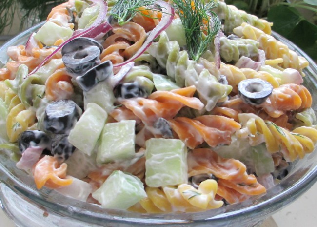

Springtime Pasta Salad

Description
This light, colorful, and fresh pasta salad that everyone will love is great for get-togethers! Easy to reduce calories by using light mayo and light sour cream. If you make this the night before, add a little water and toss again to 'rejuvenate' before serving the next day.
Ingredients
- 2 cups spiral veggie pasta
- 1 cucumber - peeled, seeded, and chopped
- ½ cup sliced black olives
- ¼ cup chopped red onion
- ½ cup mayonnaise
- ¼ cup sour cream
- 1 ¼ teaspoons dill weed
- ½ teaspoon salt
- ½ teaspoon dry mustard
- ¼ teaspoon garlic salt
Steps
- Bring a large pot of lightly salted water to a boil; cook pasta at a boil until tender yet firm to the bite, about 8 minutes; drain. Rinse pasta with cold water until cool; drain. Transfer pasta to a large bowl.
- Stir cucumber, black olives, red onion, mayonnaise, sour cream, dill, salt, dry mustard, and garlic salt together in a bowl; pour over the pasta and gently mix to coat evenly.
- Cover bowl with plastic wrap; refrigerate for 2 hours before serving.